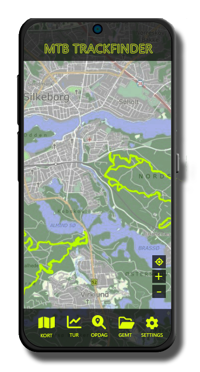

Vores app
Er man er ny i MTB-verdene, kan det være svært at finde ud af, hvor man skal starte. Derfor har vi lavet denne guide til alt hvad der er værd at vide, inden du køber en MTB.
MTB Trackfinder
LALALALAL
ksjdhgkjdhskgjhkdjshgkjsd
- dgdgd
- sggrga
- gahshtsj

| JENSEN ROCK | |
|---|---|
| Stel | JENSEN Aluminium |
| Forgaffel | Fjeder forgaffel 100mm vandring og Lockout |
| Bagskifter | Shimano Deore 12 Speed |
| Kæde | Shimano Deore 12 Speed |
| Bremser | Shimano Hydrauliske skivebremser |
| Styr | JENSEN Aluminium 29" |
| Hjul | 27,5"hjulstørrelse med Shimano nav |
| Frempind | Kalloy |
| Sadelpind | Kalloy 31.6x350mm |
| Sadel | Velo Gel 3 |
| Tilbehør | Shimano Deore 1x12 speed 34T |
| Pris | 4999,- |
| JENSEN RALPH | |
|---|---|
| Stel | JENSEN Aluminium |
| Forgaffel | Suntour XCR32 m/Lockout/td> |
| Bagskifter | Shimano Deore 12 Speed |
| Kæde | Shimano Deore 12 Speed |
| Bremser | Shimano Deore M6100 hydraulisk |
| Styr | JENSEN Aluminium 29" |
| Hjul | Kenda Slant Six 2.2 |
| Frempind | Kalloy |
| Sadelpind | Kalloy 31.6x350mm |
| Sadel | Velo Gel 3 |
| Tilbehør | Shimano Deore 1x12 speed 34T |
| Pris | 8000,- |
| JENSEN ALU | |
|---|---|
| Stel | JENSEN Aluminium |
| Forgaffel | Rock Shoc Reba RL Air 100mm |
| Bagskifter | Shimano XT M8100 12 speed |
| Kæde | Shimano XT 12 Speed |
| Bremser | Shimano XT M8100 Hydraulisk Disc |
| Styr | Kalloy 31.8mm 5 grader |
| Hjul | Shimano MT500 29" |
| Frempind | Kalloy Lite |
| Sadelpind | Kalloy 31.6x350mm |
| Sadel | Specialized |
| Tilbehør | Shimano XT M8100 1x12 speed |
| Pris | 11.999,- |
| JENSEN CARBON | |
|---|---|
| Stel | Full Carbon Stel |
| Forgaffel | Rock Shox Reba RL Air 100mm m/poplock |
| Bagskifter | Shimano XT 12 Speed |
| Kæde | Shimano XT 12 Speed |
| Bremser | Shimano XT Disc |
| Styr | Kalloy Uno Lite |
| Hjul | Shimano 29" 12 speed |
| Frempind | Kalloy Uno Lite |
| Sadelpind | Kalloy Uno Lite |
| Sadel | JENSEN |
| Tilbehør | Garniture Shimano XT 1x12 speed |
| Pris | 20.000,- |